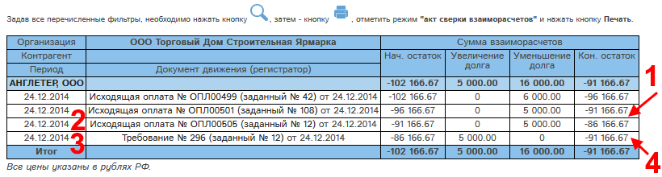

В программе "Мобильный офис" доступна возможность проведения исходящей оплаты - внутреннего платежа.
Для проведения внутреннего платежа необходимо создать исходящую оплату. При создании оплаты нужно отметить в ней галочку "Внутренний платеж" (1):
Рис. Создание исходящей оплаты-внутреннего платежа.
При простановке галочки "Внутренний платеж" (1) в карте оплаты автоматически появляется блок "Сотрудник-получатель".
Для проведения внутреннего платежа необходимо:
Укажем сумму оплаты, заданный номер и заданную дату оплаты.
Выберем код оплаты.
Выберем контрагента.
Нажмем "Сохранить исходящую оплату и перейти к утверждению".
Окно создания исходящей оплаты примет вид:
Рис. Создание оплаты-внутреннего платежа. Оплата не утверждена.
В режиме внутреннего к исходящей оплате можно прикреплять входящие счета выбранного контрагента. Прикрепление исходящих счетов и выбор одного из режимов : "Оплата по договору", либо "Оплата по счету" (1) не являются обязательным для утверждения исходящей оплаты в этом режиме.
Утвердим оплату. Для этого отметим галочку "Утверждаю" (2) и нажмем "Сохранить и остаться" (3). Окно оплаты примет следующий вид:
Рис. Исходящая оплата - внутренний платеж утверждена.
В блоке Примечания (1) указано автоматически созданное и утвержденное требование.
Требование - полностью автоматический документ. Его назначение - компенсация расхода средств по данной оплате в отчете "Ведомость по контрагенту". Требование недоступно для редактирования, утверждения, снятия утверждения: все эти операции проводятся в требовании автоматически после внесения изменений в родительскую исходящую оплату.
Требование доступно только для просмотра. Список требований находится в разделе "Поступления/реализации", на вкладке "Требования":
Рис. Реестр требований.
Требование, связанное с рассматриваемой нами оплатой, отмечено цифрой 1. Ссылка на рассматриваемую нами оплату отмечена на рисунке цифрой 2.
Для просмотра требования нажмем кнопку  . Откроется карта требования:
. Откроется карта требования:
Рис. Карта связанного с исходящей оплатой требования.
Как видно на рисунке, поля требования заполнены данными из нашей исходящей оплаты.
Проверим отчет "Ведомость по контрагенту":

Рис. Внутренний платеж и требование в отчете "Ведомость по контрагенту".
Как видно на рисунке, рассматриваемая нами исходящая оплата ОПЛ00505 (2) уменьшает долг контрагенту на 5000 р., а связанное с ней требование № 296 (3) увеличивает долг контрагенту. В результате конечный остаток не меняется (1,4). Таким образом, внутренний платеж НЕ ВЛИЯЕТ на остатки в отчете "Ведомость по контрагенту".
Проверим отчет "Движение д/с":
Рис. Внутренний платеж в отчете "Движение д/с".
Как видно на рисунке, исходящая оплата ОПЛ00505 (1) попадает в отчет "Движение д/с", а требование - не попадает. Таким образом, внутренний платеж ВЛИЯЕТ на остатки в отчете "Движение д/с".